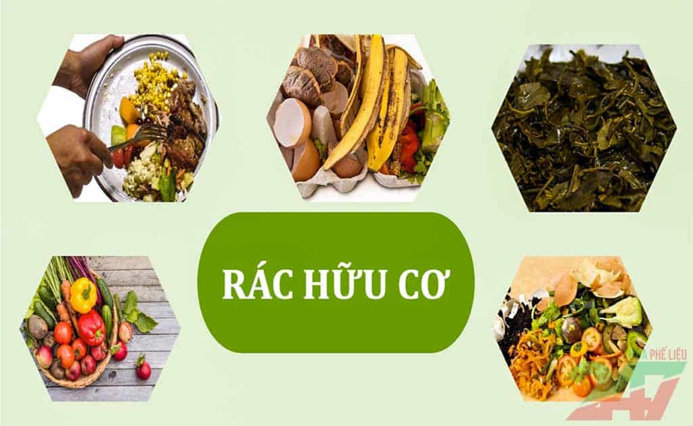
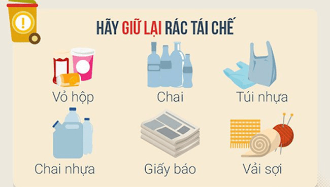
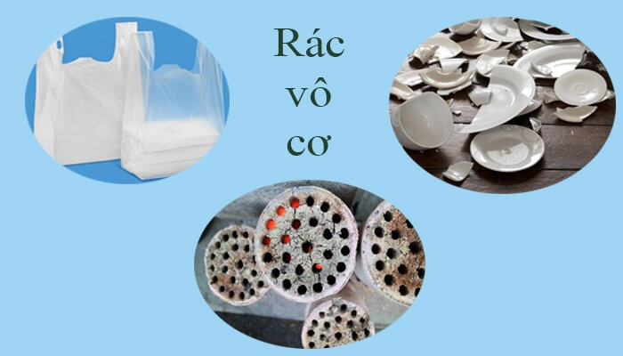
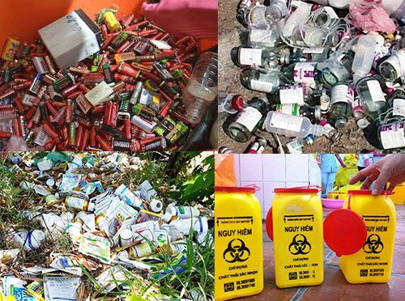

CÁC LOẠI RÁC THƯỜNG GẶP
Rác thải được chia thành nhiều nhóm để dễ xử lý và tái chế. Việc phân loại rác đúng giúp bảo vệ môi trường và giảm lượng rác thải ra thiên nhiên.
1. Rác hữu cơ
Là rác có thể phân hủy sinh học, có nguồn gốc từ thực vật và động vật.
- Thức ăn thừa
- Xác cá, thịt
- Vỏ rau củ, trái cây
- Lá cây, cỏ, hoa héo
Xem thêm
2. Rác tái chế
Là rác có thể được thu gom và tái sử dụng để tạo thành sản phẩm mới.
- Giấy, bìa carton
- Nhựa PET, chai nhựa
- Lon nhôm, kim loại
- Thủy tinh, chai lọ
Xem thêm
3. Rác vô cơ
Là rác khó phân hủy trong môi trường, không tái chế được.
- Túi nilon bẩn
- Gạch, đá, gốm sứ vỡ
- Xốp, mút
- Lẻ nhựa không tái chế
Xem thêm
4. Rác thải nguy hại
Là rác chứa hóa chất độc hại, cần xử lý riêng để tránh gây ô nhiễm.
- Pin, ắc quy
- Bóng đèn huỳnh quang
- Thuốc trừ sâu
- Dầu nhớt, hóa chất
- Rác y tế (kim tiêm, bông gạc,...)
Xem thêm